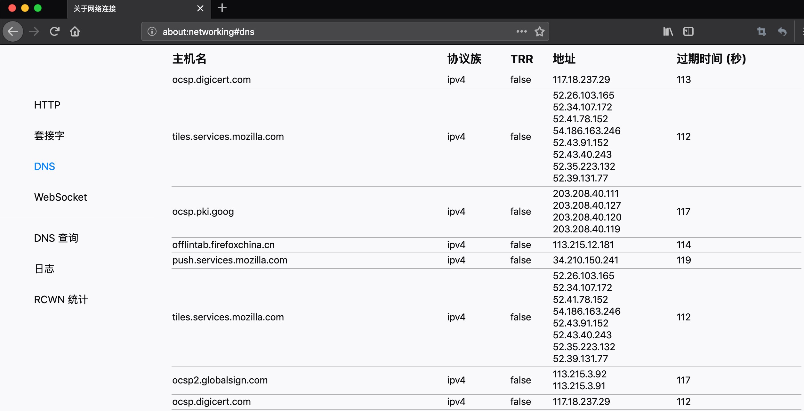
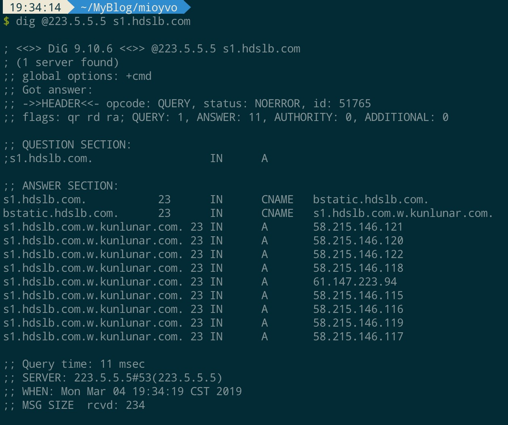

Story
这一段时间看B站体验很差，速度不能跑满而且时不时卡住，让人抓狂。
今天看到DoH（DNS over HTTPS）在Firefox（FF）得到支持得新闻，想起前几天调研Rust的时候提到Mozilla已经把FF核心从C++切换到RUST，据说性能很好？于是心血来潮装了一个Firefox Quantum。
装好FF后，打开西贝斗鱼等网站，没感觉加载比Chrome多快，打开默认的DoH的，FF提供了一个Cloudflare的DoH Resolver（ https://cloudflare-dns.com/dns-query ），再测试一通发现B站的速度还是老样子甚至更差，谷歌了一下，发现FF提供了一个about:networking的小工具，可以查看很多网络相关的信息，其中的DNS一栏可以查看到DNS的host缓存，非常方便好用。

打开调试窗口看到B站的CDN用的地址之一是s1.hdslb.com，在about:networking中找到缓存的ip地址并不是杭州的，打开DoH切换了Cloudflare和红鱼 DNS也解析到了不正确的区域。
探索
之前并不了解如何检查DNS的解析结果，谷歌了一会儿，了解基本的dig命令用法，原来DNS的好坏是否适合只看ping速度是无用的，还要看解析的结果。
国外的DNS比如谷歌、Cloudflare、Quad9，标榜关注用户隐私、安全、高速，但在解析国内的域名速度慢、被墙解析失败、CDN分配错误区域等问题；国内的DNS比如各运营商、114等，DNS污染和投毒等问题也让人恶心，但好在能满足日常使用尤其是CDN不会分配错误区域，解决这次看B站的问题。
下面测试了几个主流的DNS提供商，解析B站的一个CDN地址s1.hdslb.com，使用IPIP查询ip信息，例如：
* 阿里DNS 223.5.5.5


结果汇总
我生活在杭州，宽带运营商是杭州华数
| DNS提供商 | DNS地址 | 解析地址 | 解析地址地理位置 | 运营商 | 解析时间 |
|---|---|---|---|---|---|
| 阿里 AliDNS | 223.5.5.5 | 58.215.146.121 | 江苏无锡 | 电信 | 11 ms |
| 谷歌 Google DNS | 8.8.8.8 | 113.215.232.229 | 浙江杭州 | 浙江华数/联通 | 10 ms |
| 114 DNS | 114.114.114.114 | 113.215.232.226 | 浙江杭州 | 浙江华数/联通 | 17 ms |
| 百度 BaiduDNS | 180.76.76.76 | 42.81.98.123 | 中国天津 | 电信 | 35 ms |
| CNNIC SDNS | 1.2.4.8 | 113.215.232.5 | 浙江杭州 | 浙江华数/联通 | 15 ms |
| DNSPod DNS+(腾讯) | 119.29.29.29 | 113.215.232.5 | 浙江杭州 | 浙江华数/联通 | 4 ms |
| IBM Quad9 | 9.9.9.9 | 113.215.232.228 | 浙江杭州 | 浙江华数/联通 | 42 ms |
| Cloudflare DNS | 1.1.1.1 | 失败 |
结论
之前简单地用ping测了各个DNS提供商，选了最快的阿里DNS，现在学习了dig发现它解析B站CDN域名到错误的区域，导致了看B站视频很卡的问题，现在切换到DNSPod DNS+，问题解决。
Firefox对比Chrome，性能的差距没有明显感觉出来，但about:networking工具好用👍🏻。